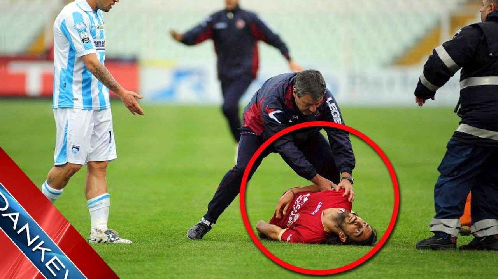

Bienvenido a la Web
Estás viendo los resultados de tu búsqueda.
Has seleccionado los videos de deportes ordenados
por
los más recientes.
|  | |||||||
|
FOX SPORTS SOCCER
26 Reproducciones · Hace 14 Días |
NBA Crossovers and Ankle
Breakers 4 Reproducciones · Hace 15 Días |
Tenis. Abierto de Australia
2017 7 Reproducciones · Hace 15 Días |
Dos Sirenas al agua 5 Reproducciones>· Hace 17 Días |